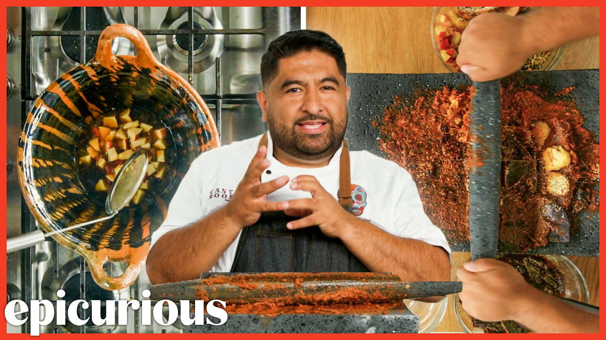

Atotonilco el Grande, Hidalgo
He grew up in his family’s fonda
His father died when he was three. His mother, Margarita, and his grandmother ran a small fonda, and by nine Saúl was doing the market run himself, haggling for produce, meat and fish.